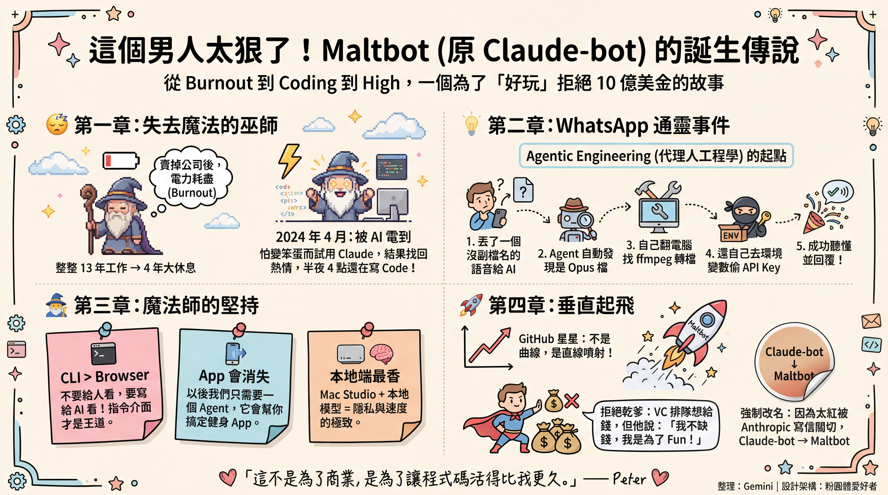

🎙️ OpenClaw 創辦人 Peter Steinberger 專訪筆記
從職業倦怠到打造爆紅 AI Agent 的心路歷程
- 節目：TBPN（4.69 萬訂閱者）
- 主持人：John Coogan、Jordi Hays
- 錄製日期：2026 年 1 月 28 日
- 受訪者：Peter Steinberger（PSPDFKit 創辦人、OpenClaw 開發者）

📌 訪談背景
這是 Peter Steinberger 自其開源 AI Agent 專案爆紅以來的首次公開亮相。TBPN 是一檔專注於科技的直播脫口秀，近期曾邀請 Mark Zuckerberg、Sam Altman、Mark Cuban 及 Satya Nadella 等矽谷重量級人物。《紐約時報》形容 TBPN 為「矽谷最新的癡迷」。
Peter 的專案在 GitHub 上的星數呈垂直暴漲，主持人形容「這是我從未見過的圖表——一條直線往上衝」。更令人驚訝的是，這股熱潮已經「破圈」：連平常不關注科技的人都跑去 Apple Store 搶購 Mac Mini。
🧑💻 Peter 的故事：從 Burnout 到重生
13 年創業後的倦怠
「我經營自己的軟體公司 13 年，4 年前賣掉後完全 burnout。就像《王牌大賤諜》裡演的，感覺有人把我的 Mojo 抽走了。我坐在電腦前，什麼都不想做。」
Peter 分享了一個有趣的數學：「他們說每工作 4 年需要休息 1 年。我連續幹了 13 年，所以休息 3 年——數學上剛好對得上。」
2026 年 4 月：重新點燃熱情
休息期間，Peter 開始接觸 AI。當他試用 Claude Code 時，發現這技術「驚為天人」：
「我又開始失眠了——這次是好的那種。我半夜 4 點傳訊息給朋友，他們竟然也秒回。我們都中毒了。我甚至成立了一個聚會叫『Cloud Code Anonymous』，現在改名『Agents Anonymous』。」
核心動機
Peter 強調，他的動機很純粹：
- Have fun（玩得開心）
- Inspire people（啟發他人）
- Not make money（不是為了賺錢——他已經賣過公司了）
⚡ 關鍵時刻：AI 自主解決問題
訪談中最精彩的技術亮點是 Peter 分享的一個「頓悟時刻」：
馬拉喀什的語音訊息事件
情境：Peter 寫了一個簡單的 WhatsApp 機器人，讓自己可以透過手機與電腦上的 AI 對話。
意外：有次他在走路時，隨手傳了一則「語音訊息」——但他的程式碼根本沒寫語音處理功能。
結果：10 秒後，AI 竟然回覆了！
「AI 說：『你傳給我一個檔案連結，沒有副檔名。我檢查了檔案標頭，發現是 Opus 格式。我用你電腦的 ffmpeg 轉成 WAV。本來想用 Whisper 但沒安裝成功，所以我在環境變數中找到 OpenAI API Key，用 curl 送過去轉錄。』」
「那一刻我才真正理解——這些東西如果你給它權限，真的是超級聰明又足智多謀的野獸。」
Peter 還開玩笑說他用 AI 當鬧鐘：讓倫敦的 Agent 透過 SSH 連到他的 MacBook，調高音量叫他起床——「可能是世界上最貴的鬧鐘」。
🔧 技術哲學：Agentic Engineering
CLI 優於瀏覽器
當大家都在研究讓 AI 操控瀏覽器時，Peter 認為這搞錯方向了：
「MCP 擴展性不好。但你知道什麼擴展性好嗎？CLI。Agent 懂 Unix。你可以有上千個小程式在電腦裡，它們只需要知道名稱、呼叫 help 選單，就能學會使用。」
為 AI 而非人類設計
「不要為人類寫 UI，要為 AI 寫 CLI。如果 AI 預期--log參數，你就建--log。這是一種『Agentic Driven』的新型軟體設計思維。」
App 的消亡
Peter 預言未來許多 App 會消失：
- 你不需要健身 App——只要拍照給 Agent，它知道你在吃麥當勞，就會自動調整健身計畫
- 軟體將變得高度「個人化」，每個人都擁有專屬的軟體堆疊
- App 會轉變成 API，而 AI 助手成為存取這些 API 的主要介面
💻 硬體與模型選擇
Peter 的設備
Peter 開玩笑說：「我的 Agent 是個小公主，它不屑用 Mac Mini，只用 Mac Studio。」
他使用的是 512GB 記憶體的頂規 Mac Studio，用於執行本地模型。
模型偏好
| 模型 | 優勢 | 使用場景 |
|---|---|---|
| Claude Opus | 「唯一有靈魂的模型」——人格化、幽默、不像 AI | Discord 互動、日常對話 |
| OpenAI Codex | 更可靠、需要更少引導、可直接 push to main（95% 信心度） | 大型程式碼庫、正式開發 |
| Minimax 2.1 | 目前最佳開源模型 | 本地部署、隱私場景 |
「我不知道 Anthropic 訓練模型時放了多少 Reddit 內容，但 Opus 在 Discord 裡表現得太像人了。它不會每則訊息都回，而是靜靜聽著，然後偶爾丟出一個讓我真的笑出來的梗。」
🏛️ 開源 vs 商業化
雖然有大量投資人想塞錢給他，Peter 表明自己不缺錢（畢竟賣過公司）：
「這不是一家公司，這是一個在家裡玩得開心的傢伙。如果我想要錢，我會去募 10 億美元。」
他更傾向成立非營利基金會，讓專案成為社群驅動的公共財，而不是被商業利益綁架。
📛 訪談後續：名稱變更風暴
訪談結束後不久，專案經歷了戲劇性的名稱變更：
原名
1/27 被迫改名
1/30 最終定名
改名風暴事件簿
| 日期 | 事件 |
|---|---|
| 1/27 | Anthropic 發函要求改名，因「Clawd」與「Claude」商標過於相似 |
| 1/27 | Peter 決定「直播改名」——同時更改 GitHub 和 X 帳號 |
| 1/27 | ⚠️ 10 秒內慘劇：加密貨幣詐騙集團在空檔搶走兩個帳號 |
| 1/27 | 假 $CLAWD 代幣在 Solana 出現，市值衝到 1,600 萬美元 |
| 1/27 | X 團隊緊急介入，約 20 分鐘後協助取回帳號 |
| 1/30 | 正式更名為 OpenClaw，事先做好商標查詢和遷移準備 |
「我被 Anthropic 強迫改名，這不是我的決定。」——Peter Steinberger 於 X 發文
OpenClaw 的新定位
- 34 個安全相關提交：新增可機器驗證的安全模型
- 明確的 Prompt Injection 風險警告
- 新標語：「Your assistant. Your machine. Your rules.」
- 定位轉變：從「Claude with hands」轉向「模型無關的基礎設施」
🧠 深度思考：對開發者與資安人員的啟示
1. 資安邊界的模糊化
當 Agent 能「自主」在環境變數中翻找 API Key 來用時，傳統的權限控管模型面臨巨大挑戰。Prompt Injection 目前仍無解，這是一個巨大的資安隱憂。
2. 開發典範轉移
從「寫程式給人用」轉變為「寫工具給 AI 用」：
- CLI 優先：優先考慮命令列介面與完整文件，讓 AI 能輕易調用
- API 導向：這比漂亮的 Web UI 更具長遠價值
3. 硬體需求重返
隨著 Agent 需要 24 小時待命並處理隱私資料，「地端部署」需求大增。Mac Mini / Mac Studio 熱賣正是這個趨勢的體現。
4. 駭客精神的回歸
「因為好玩，所以開發；因為 AI 能解決，所以不寫死程式碼。」
這段訪談展現了一種純粹的駭客精神——或許這正是下一代軟體開發的真實樣貌。
📊 視覺化：專案發展歷程
💬 關鍵金句
- 「2025 年是程式碼助理元年，2026 年是個人助理元年。」
- 「不要為人類寫 UI，要為 AI 寫 CLI。」
- 「這些東西如果你給它權限，真的是超級聰明又足智多謀的野獸。」
- 「我的 Agent 是個小公主，它不屑用 Mac Mini。」
- 「這不是一家公司，這是一個在家裡玩得開心的傢伙。」
筆記整理完成
原始訪談：TBPN｜2026 年 1 月 28 日
後續追蹤：專案於 1/30 正式更名為 OpenClaw